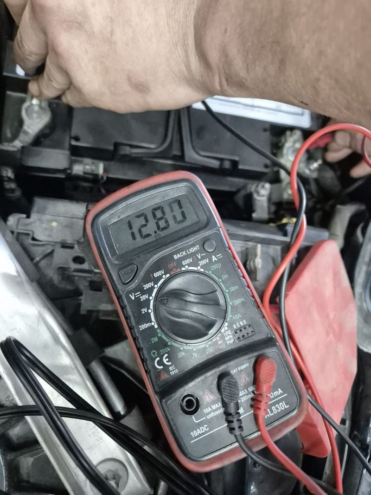

Owned by the site's founder
Owned by the site's founderServicing
Edwin Garage
4.9 (600+ Google ratings) (checked November 2026) See Google reviews
Owner-run car workshop in Ang Mo Kio Industrial Park 2, open Monday to Saturday.
In short: 27 workshops on this site list car battery replacement, across 14 industrial estates. The shortlist below shows 12 with strong Google ratings; every one is listed by area further down.
A car battery that struggles to start the engine, or has been flat more than once, usually needs testing and often replacement. Some providers come to your car, others fit it at a workshop. Share your car model so the right battery size is matched, and ask about warranty before you pay.
Paid placements, marked Featured (paid), and the site founder's own workshop, marked as owned by the founder. Shown on their own, not part of any ranking or order on this page.
Owned by the site's founder4.9 (600+ Google ratings) (checked November 2026) See Google reviews
Owner-run car workshop in Ang Mo Kio Industrial Park 2, open Monday to Saturday.

Featured (paid) Featured (paid)
Featured (paid)Showing 12 of 28 listed workshops, A to Z. Paid listings are never in it. Every workshop is listed by area further down this page.
5.0 (1 Google rating) (checked November 2026) See Google reviews
55 Serangoon North Ave 4, #02-10, Singapore 555859
General servicing and repair
Customers mention: Battery replacement
4.5 (28 Google ratings) (checked November 2026) See Google reviews
2 Yishun Industrial Street 1, #02−06 Northpoint Bizhub, Singapore 768159
General servicing and repair
Customers mention: Battery replacement, Fault diagnosis, Breakdown repair
4.8 (328 Google ratings) (checked November 2026) See Google reviews
288 MacPherson Rd, Singapore 348610
General servicing and repair
Customers mention: Aircon flushing, Car aircon repair, Battery replacement
4.9 (312 Google ratings) (checked November 2026) See Google reviews
32 Woodlands Industrial Park E1, Singapore 757723
General servicing and repair
Customers mention: Car aircon repair, Aircon compressor replacement, Battery replacement
5.0 (68 Google ratings) (checked November 2026) See Google reviews
60 Jln Lam Huat, #03-58 Carros Centre, Singapore 737869
General servicing and repair
Ranked 2nd of 24 Jalan Lam Huat and Carros Centre workshops with 20 or more Google ratings, by rating and number of ratings together
Customers mention: Car servicing, Starter motor replacement, Exhaust replacement
5.0 (184 Google ratings) (checked November 2026) See Google reviews
7 Soon Lee St, #05-05, Singapore 627608
General servicing and repair
Ranked 1st of 8 Soon Lee Street (Pioneer Point) workshops with 20 or more Google ratings, by rating and number of ratings together
Customers mention: Accident repair and insurance claims, Turbo repair, Car servicing
4.6 (48 Google ratings) (checked November 2026) See Google reviews
60 Jln Lam Huat, #04-55, Singapore 737869
General servicing and repair
Ranked 23th of 24 Jalan Lam Huat and Carros Centre workshops with 20 or more Google ratings, by rating and number of ratings together
Customers mention: Car servicing, Battery replacement, Aircon servicing
4.2 (56 Google ratings) (checked November 2026) See Google reviews
8 Kaki Bukit Ave 4, #02-45, Singapore 415875
General servicing and repair
Ranked 48th of 49 Kaki Bukit Industrial Estate workshops with 20 or more Google ratings, by rating and number of ratings together
Customers mention: Peugeot and Citroën repairs, Electrical fault diagnosis, Battery and starting issues
5.0 (104 Google ratings) (checked November 2026) See Google reviews
21 Jurong West Ave 5, Singapore 649481
General servicing and repair
Customers mention: Battery replacement, Flat tyre help
5.0 (20 Google ratings) (checked November 2026) See Google reviews
25 Kaki Bukit Rd 4, #03-40, Singapore 417800
General servicing and repair
Ranked 22th of 49 Kaki Bukit Industrial Estate workshops with 20 or more Google ratings, by rating and number of ratings together
Customers mention: BMW servicing, Fault diagnosis, Battery replacement
5.0 (127 Google ratings) (checked November 2026) See Google reviews
Caltex, 3700 Yishun Ring Rd, Singapore 768690
General servicing and repair
Customers mention: Undercarriage noise diagnosis, Battery replacement, Fault diagnosis
5.0 (37 Google ratings) (checked November 2026) See Google reviews
60 Jln Lam Huat, #03-35/36, Singapore 737869
General servicing and repair
Ranked 7th of 24 Jalan Lam Huat and Carros Centre workshops with 20 or more Google ratings, by rating and number of ratings together
Customers mention: Pre-purchase inspection, Battery replacement, Car repair
For business owners: is your workshop listed here? Claiming a listing is free.
Every listed workshop for car battery replacement, grouped by industrial estate. Tap a name for its page with address, hours, WhatsApp and Call.
These workshops are filed under another service here, but their own website includes car battery replacement among its services: 1 Car Service (Sin Ming Industrial Estate), Autobacs Car Care (Kaki Bukit Industrial Estate), BTM Performance SG (Kaki Bukit Industrial Estate), Carswift Repair (Soon Lee Street (Pioneer Point)), Hybrid Automotive (Toh Guan Road East and Enterprise Hub), JW Motoring (Kaki Bukit Industrial Estate), Kakis Garage (Sin Ming Industrial Estate), Li Sheng Automotive (1999) (Bukit Batok Crescent (WCEGA Plaza)), Major Autolution (Jalan Lam Huat and Carros Centre), My Tyre Autoservice (Yishun Industrial Street 1), Pick And Go Werkz (Kaki Bukit Industrial Estate), Servo Autowerkz Continental Car Specialist (Sin Ming Industrial Estate), TT MotorSport (Paya Ubi Industrial Park), TT Motorsport @ Jurong (Toh Guan Road East and Enterprise Hub) and TYREPLUS Toh Guan (Toh Guan Road East and Enterprise Hub).
A battery job usually starts with a test of the battery and the charging system. If the battery is weak it is replaced with one of the correct size and type for your car, and some cars need the new battery registered with the car's computer.
Sometimes. A test shows whether it holds charge. A battery that keeps going flat may also point to a charging or drain problem.
Usually yes: EFB or AGM types. Fitting the wrong type can shorten its life.